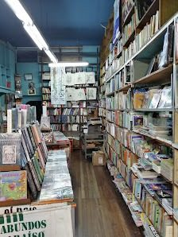
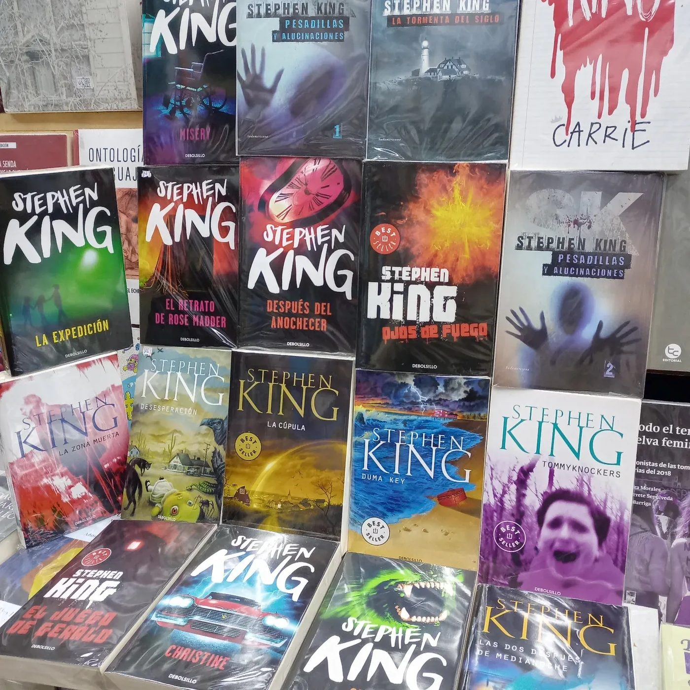
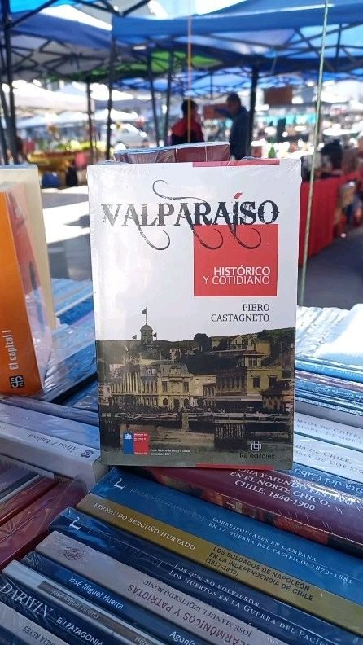
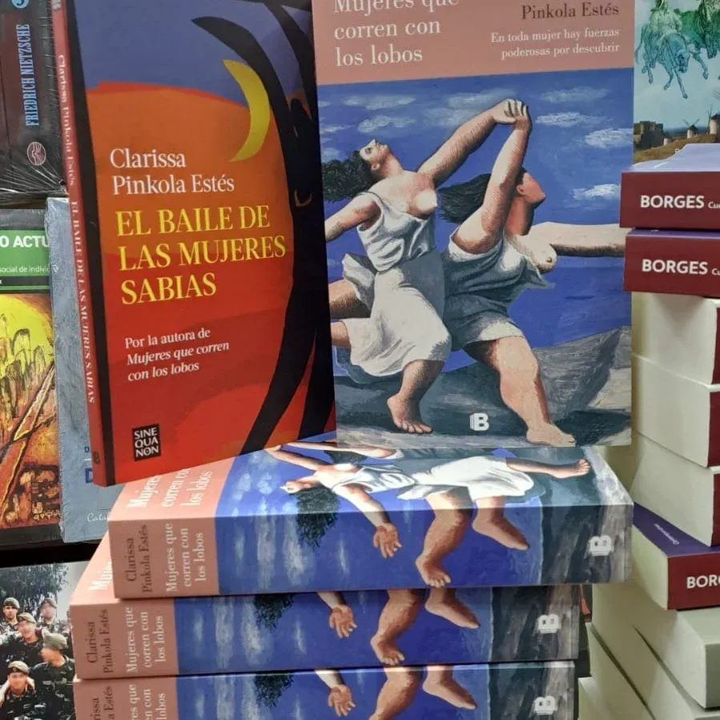
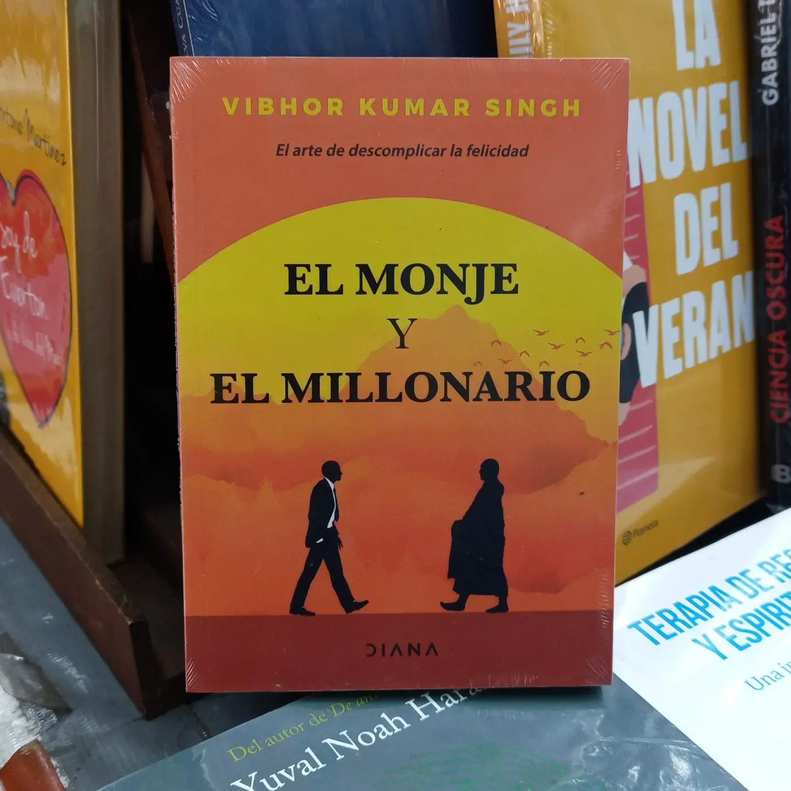
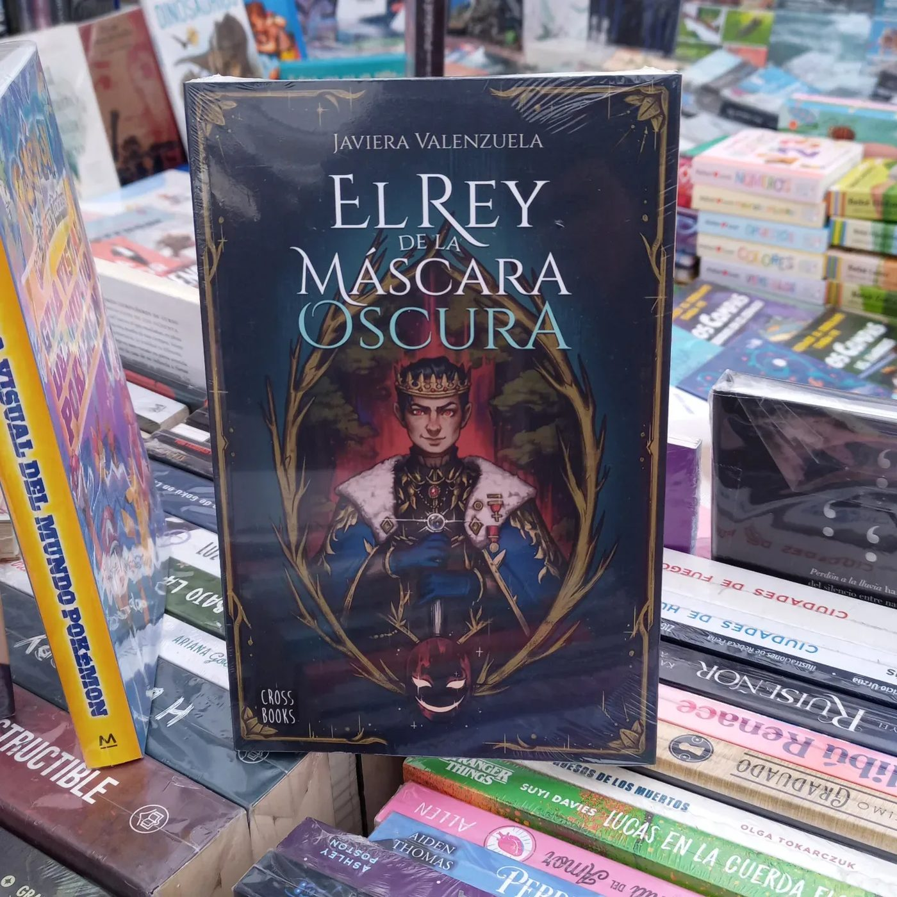
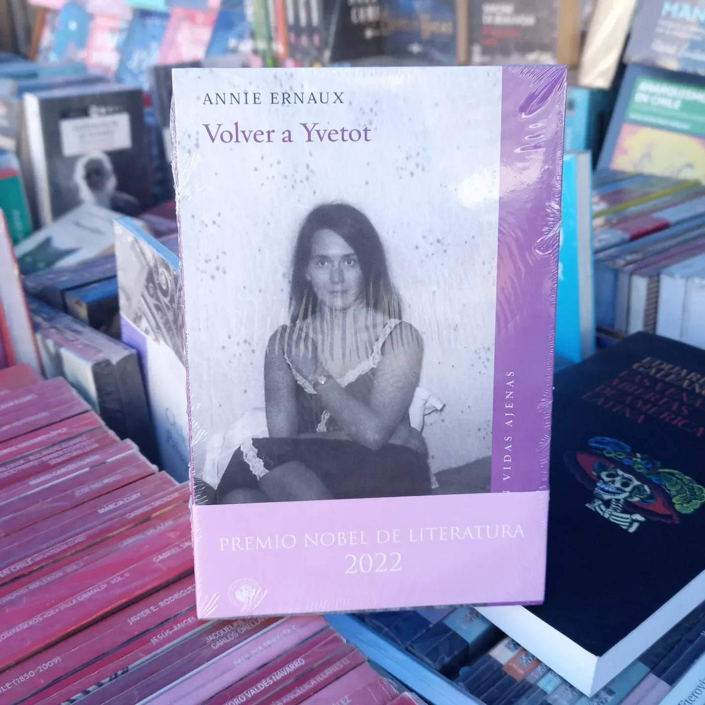

"Tiene muy buenos precios, incluso más baratos que comprar por internet. Si no tienen el libro, lo encargan y llega en unos cuatro días."
Reseña de Google · adaptadaEl local
Conócenos por dentro



Librería · Calle Esmeralda, Valparaíso
Libros nuevos y usados, clásicos de tapa dura a precios de librería de barrio, y encargos que llegan en pocos días. Atendida por su dueño, con gatos de librería incluidos.
Catálogo
Ediciones firmes y bonitas de los imprescindibles, a precios que sorprenden hasta a quienes compran por internet.
Estantes de segunda mano donde siempre aparece una joya: literatura, ensayo y hallazgos inesperados.
Una selección cuidada de títulos nuevos que se renueva con las llegadas de cada semana.
Si el libro que buscas no está en tienda, lo encargamos: suele llegar en unos cuatro días. Basta con dejarnos el dato.
Novedades






Una muestra de lo que va llegando. El catálogo completo se descubre en tienda; y si un título no está, se encarga.
La casa
En Mar de Libros te recibe un gato en la puerta, dispuesto a acompañarte entre los estantes. Es parte del encanto de una librería de barrio de verdad: se conversa, se recomienda y se busca hasta encontrar.
Opiniones
"Tiene muy buenos precios, incluso más baratos que comprar por internet. Si no tienen el libro, lo encargan y llega en unos cuatro días."
Reseña de Google · adaptada"El señor que atiende es muy amable y los gatos, cariñosísimos. Cien por ciento recomendada."
Reseña de Google · adaptada"Mezcla de libros originales y usados, con una selección de clásicos de tapa dura a muy buen precio."
Reseña de Google · adaptadaEl local

Horario
Ubicación
Esmeralda 1124
Valparaíso
En plena calle Esmeralda, a pasos de la plaza Aníbal Pinto y del corazón histórico del puerto.
Encargos
Llámanos con el título y el autor. Lo buscamos, lo encargamos y te avisamos cuando esté en el mesón.
Llamar al 32 259 3810